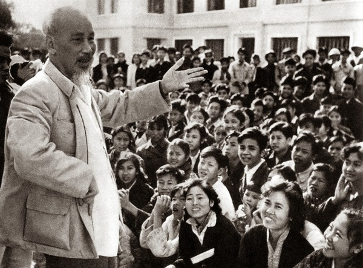
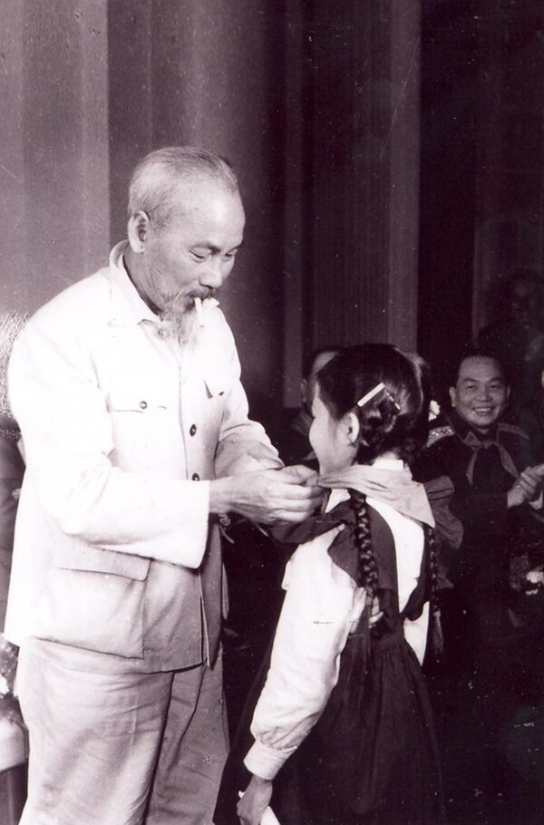
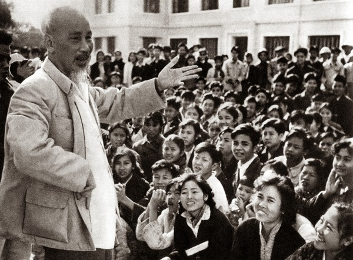
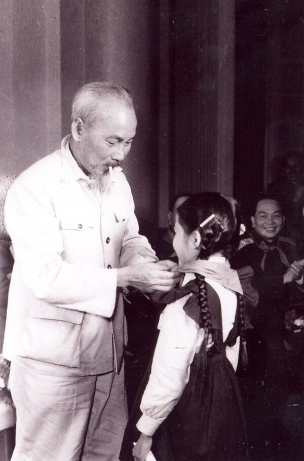

Thế hệ trẻ chúng con luôn biết ơn và trân trọng những gì Bác đã để lại.
Chúng con biết rằng độc lập, tự do hôm nay là bao nhiêu mồ hôi, sương máu của Bác cùng các thế hệ cha ông.
Chúng con sẽ luôn học tập và làm theo tư tưởng đạo đức của Bác. Chúng con sẽ không ngừng học hỏi, rèn luyện và cống hiến để xây dựng một đất nước Việt Nam ngày càng giàu đẹp, văn minh hơn.
 


